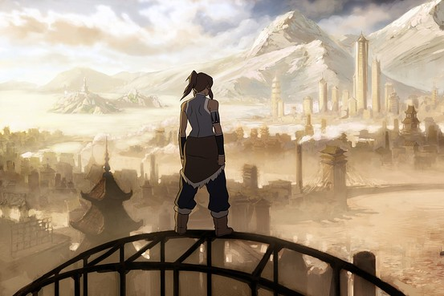
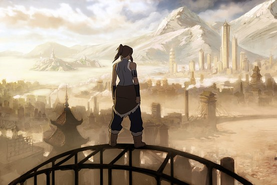

Welkom op Avatar: The Four Elements de grootste Nederlandse fansite over Avatar: De Legende van Aang en De Legende van Korra. Bekijk de nieuwste en oude afleveringen in het Engels en Nederlands. Op het forum kan je samen met andere fans gezellig praten over Avatar.
Nieuws
Eerste bewegende beelden Avatar: De Legende van Korra
Door glkx op zaterdag 6 november 2010 om 00:05
Maanden geleden verschenen deze beelden op de blog van een koreaanse animator, tot vandaag bleven ze alleen on opgemerkt.
Gelukkig heeft LastAirbenderFans een engelse avatar fansite deze beelden ontdekt en deze met ons gedeeld.
De beelden lijken een test animatie voor de aankomende animatie serie Avatar: De Legende van Korra.
Gelukkig heeft LastAirbenderFans een engelse avatar fansite deze beelden ontdekt en deze met ons gedeeld.
De beelden lijken een test animatie voor de aankomende animatie serie Avatar: De Legende van Korra.
Interview met bedenkers Avatar op Comics Con
Door glkx op vrijdag 23 juli 2010 om 15:51
The Wall Street Journal heeft de gelegenheid gekregen om een interview af te nemen met de bedenkers van Avatar: The Last Airbender en The Legend of Korra, Michael Dante DiMartino and Bryan Konietzko.
Hieronder de belangrijkste delen uit interview van The Wall Street Journal in het engels.
The Wall Street Journal: How did you come up with the idea for the spinoff?
Bryan Konietzko:
Konietzko: You gotta keep in mind that he was frozen in a state of suspended animation for 100 years, so he kind of burned up some of his extra Avatar time.
Michael DiMartino:
Konietzko:

The one image that you released is Korra looking out on Republic City, where a lot of the new show take place. Tell me about that city.
Konietzko:
Will we see characters from the previous series pop up?
DiMartino:
Konietzko:
DiMartino: [To Konietzko] We can say that, right? [To Speakeasy]
Konietzko:
Bron: The Wall Street Journal
Hieronder de belangrijkste delen uit interview van The Wall Street Journal in het engels.
The Wall Street Journal: How did you come up with the idea for the spinoff?
Bryan Konietzko:
Konietzko: You gotta keep in mind that he was frozen in a state of suspended animation for 100 years, so he kind of burned up some of his extra Avatar time.
Michael DiMartino:
Konietzko:

The one image that you released is Korra looking out on Republic City, where a lot of the new show take place. Tell me about that city.
Konietzko:
Will we see characters from the previous series pop up?
DiMartino:
Konietzko:
DiMartino: [To Konietzko] We can say that, right? [To Speakeasy]
Konietzko:
Bron: The Wall Street Journal
The Legend of Korra Officiel aangekondigd door Nickelodeon
Door glkx op donderdag 22 juli 2010 om 15:46
Een paar weken geleden kon ik al melden dat de naam The Legend of Korra geregistreerd was door Nickelodeon. Maar of ze wat met deze naam ging doen was alles behalve zeker. Gelukkig heeft Nickelodeon vandaag The Legend of Korra officeel aangekondigd en al een beetje van het verhaal uit de doeken gedaan.
Hier onder een stuk uit het pers bericht van Nickelodeon.
De serie zal in premiere gaan ergens in 2011 en zal geregisseerd worden door de oude bekend van Avatar: The Last Airbender, Michael DiMartino en Bryan Konietzko.
Rond de comics Con 2010 word meer informatie verwacht over The Legend of Korra. Hierover zal ik uiteraard bericht doen.
Bron: The Wall Street Journal
Hier onder een stuk uit het pers bericht van Nickelodeon.
Quote:
De serie zal in premiere gaan ergens in 2011 en zal geregisseerd worden door de oude bekend van Avatar: The Last Airbender, Michael DiMartino en Bryan Konietzko.
Rond de comics Con 2010 word meer informatie verwacht over The Legend of Korra. Hierover zal ik uiteraard bericht doen.
Bron: The Wall Street Journal
Releasedatum The Last Airbender NL officieel bekend
Door glkx op vrijdag 25 juni 2010 om 13:31
The Last Airbender zal in Nederland op 19 augustus in de bioscoop verschijnen. Deze datum staat vermeld op de officiele website van The Last Airbender. Eerder werd gedacht dat de Nederlandse release 21 juli zou zijn, dit was helaas onjuist. In Belgie verschijnt de film een kleine maand eerder, namelijk op 28 juli.
We zullen hier in Nederland nog even moeten wachten op The Last Airbender. In de VS zal The Last Airbender 1 juli in de bioscopen draaien 1 dag eerder dan in eerste instantie gepland was.
We zullen hier in Nederland nog even moeten wachten op The Last Airbender. In de VS zal The Last Airbender 1 juli in de bioscopen draaien 1 dag eerder dan in eerste instantie gepland was.
Soundtrack The Last Airbender te koop!
Door glkx op vrijdag 11 juni 2010 om 16:12
Op onder andere iTunes is de soundtrack van The Last Airbender te koop. iTunes verkoopt de soundtrack voor 8,99 euro. De soundtrack bevat 12 nummers gecomponeerd door James Newton Howard.
Special voor ATFE heb ik een korte preview gemaakt van de soundtrack")
Veel luister plezier en natuurlijk kopen die soundtrack
Special voor ATFE heb ik een korte preview gemaakt van de soundtrack
Veel luister plezier en natuurlijk kopen die soundtrack
© 2021 Avatar: The Four Elements (3.6). Alle rechten voorbehouden. Contact Privacy Voorwaarden
"Avatar: The Last Airbender" is eigendom van Nickelodeon.
"Avatar: The Last Airbender" is eigendom van Nickelodeon.